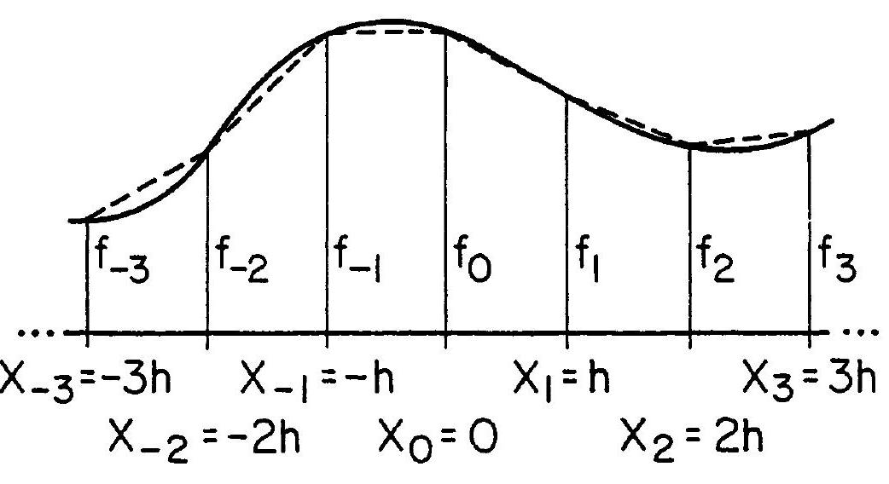

Basic Mathematic Operation
Discretization
\[f_{n}=f\left(x_{n}\right) ; x_{n}=n h(n=0, \pm 1, \pm 2, \ldots),\]

{kind=link}
Differentiation
We begin by using a Taylor series to expand $f$ in the neighborhood of $x=0$ :
\[f(x)=f_{0}+x f^{\prime}+\frac{x^{2}}{2 !} f^{\prime \prime}+\frac{x^{3}}{3 !} f^{\prime \prime \prime}+\ldots\]
where all derivatives are evaluated at x=0. It is then simple to verify that
\[\begin{split}\begin{aligned}
&f_{\pm 1} \equiv f(x=\pm h)=f_{0} \pm h f^{\prime}+\frac{h^{2}}{2} f^{\prime \prime} \pm \frac{h^{3}}{6} f^{\prime \prime \prime}+\mathcal{O}\left(h^{4}\right) \\
&f_{\pm 2} \equiv f(x=\pm 2 h)=f_{0} \pm 2 h f^{\prime}+2 h^{2} f^{\prime \prime} \pm \frac{4 h^{3}}{3} f^{\prime \prime \prime}+\mathcal{O}\left(h^{4}\right)
\end{aligned}\end{split}\]
- where \(\mathcal{O}\left(h^{4}\right)\) means terms of order \(h^{4}\) or higher.
- To estimate the size of such terms, we can assume that and its derivatives are all of the same order of magnitude,
as is the case for many functions of physical relevance.
\[f^{\prime}=\frac{f_{1}-f_{-1}}{2 h}-\frac{h^{2}}{6} f^{\prime \prime \prime}+\mathcal{O}\left(h^{4}\right)\]
\[f^{\prime} \approx \frac{f_{1}-f_{-1}}{2 h}\]
Note
This “3-point” formula would be exact if were a second-degree polynomial in the 3-point interval [-h,h], because the third- and all higherorder derivatives would then vanish.
It is more accurate (by one order in ) than the forward or backward difference formulas:
\[\begin{split}\begin{aligned} f^{\prime} & \approx \frac{f_{1}-f_{0}}{h}+\mathcal{O}(h) ; \\ f^{\prime} & \approx \frac{f_{0}-f_{-1}}{h}+\mathcal{O}(h) . \end{aligned}\end{split}\]
extract thiese formula as a practice
\[\begin{split}f^{\prime} \approx \frac{1}{12 h}\left[f_{-2}-8 f_{-1}+8 f_{1}-f_{2}\right]+\mathcal{O}\left(h^{4}\right) \\
f^{\prime \prime} \approx \frac{f_{1}-2 f_{0}+f_{-1}}{h^{2}} .\end{split}\]
Hands-On
import numpy as np
import matplotlib.pyplot as plt
## we are looking for the derivative of the sin(x) from tw methods
steps=1000
x =np.linspace(-np.pi, np.pi,steps)
y =np.sin(x)
ydac = np.cos(x)
h = x[1]-x[0]
y1dif = np.diff(y)/h
yrol2=np.roll(y,2)[2:]
yt =y[2:]
y2dif = (yt-yrol2)/(2*h)
#plt.plot(x, ydac, '--', label="answer")
plt.plot(x[:-1], y1dif-ydac[1:], lw=2, label='forward')
plt.plot(x[1:-1], y2dif-ydac[1:-1], lw=3, label='2points')
plt.legend()